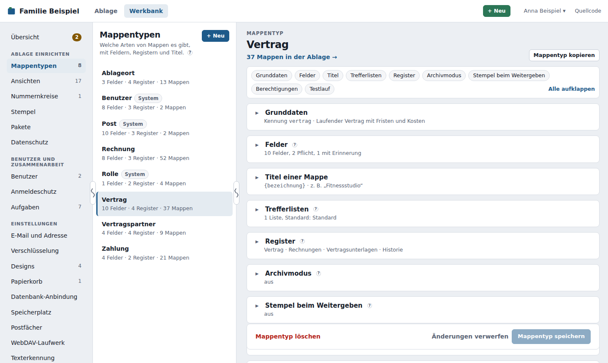
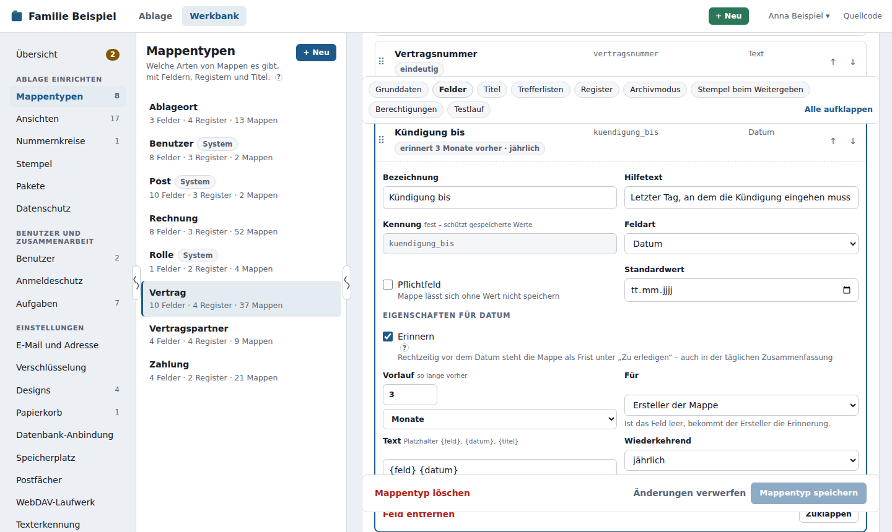
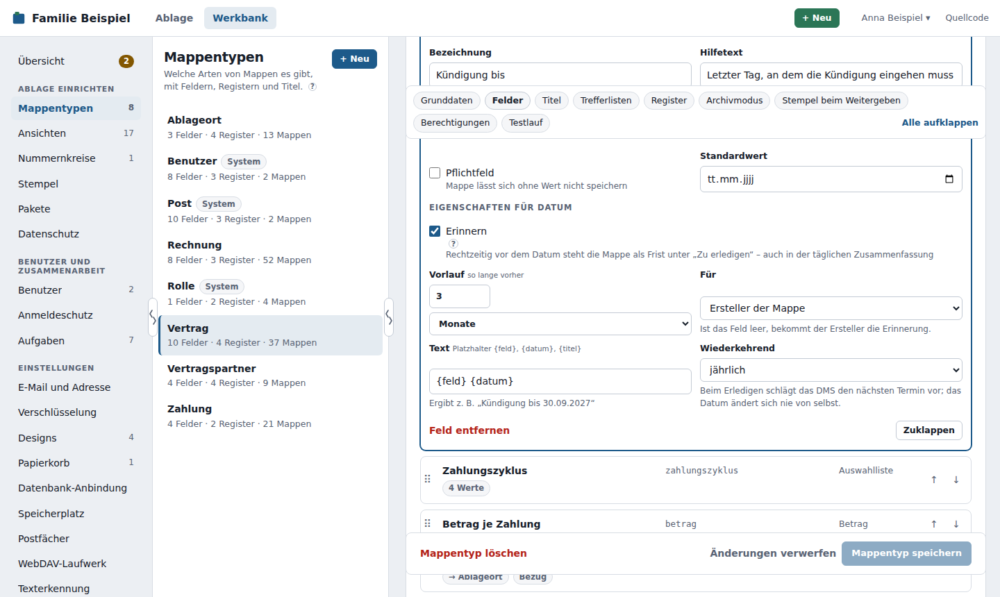
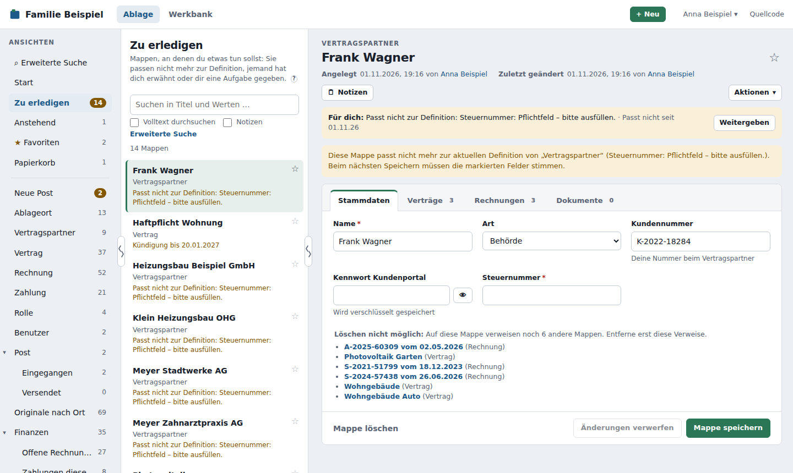
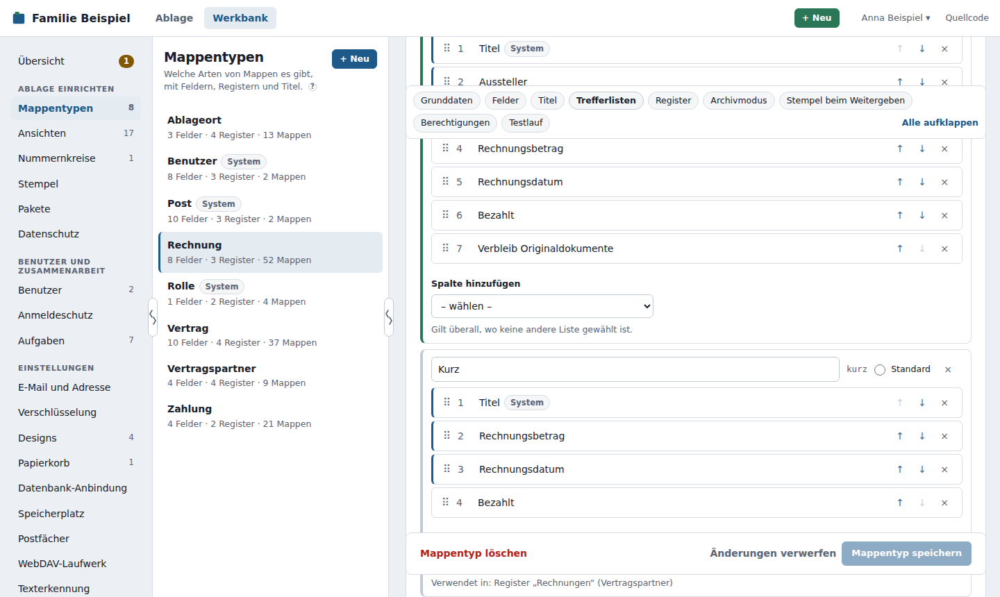
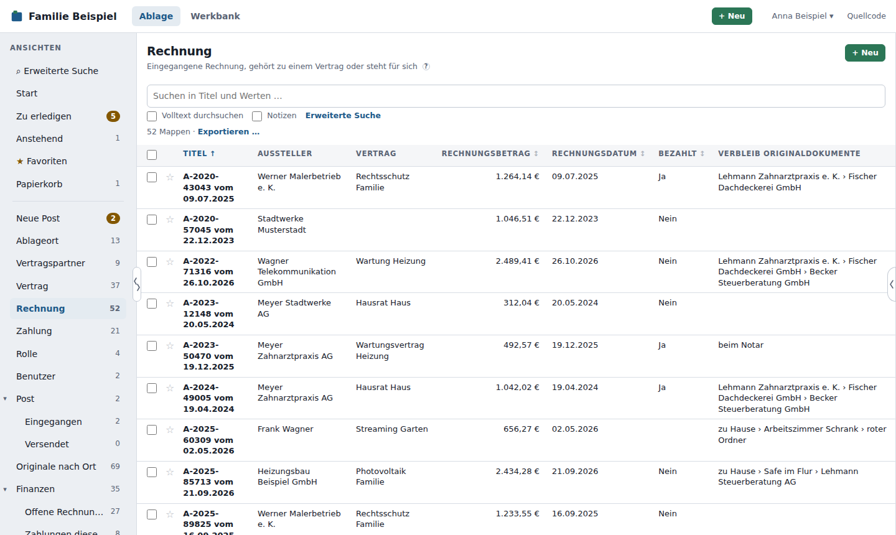
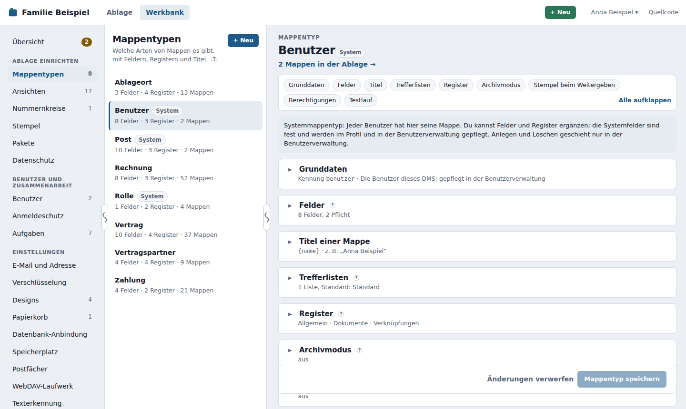

Mappentypen¶
Ein Mappentyp legt fest, welche Art von Mappe es gibt – Vertrag, Rechnung, Versicherung, Gerät … – und was darin steht. Ein neuer Mappentyp bekommt in der Ablage eine eigene Ansicht; das lässt sich beim Anlegen abwählen (siehe Grunddaten).
Mappentypen pflegst du unter Werkbank → Mappentypen. Mit + Neu legst du einen an; ein Klick auf einen bestehenden öffnet ihn zum Bearbeiten.

Wie Benutzer mit den Mappen arbeiten, beschreibt das Benutzerhandbuch.
Aufbau des Editors¶
Der Editor ist in der Reihenfolge aufgebaut, in der du einen Mappentyp anlegst: Grunddaten → Felder → Titel → Trefferlisten → Register → Archivmodus → Stempel beim Weitergeben → Berechtigungen → Testlauf.
- Jeder Bereich lässt sich mit einem Klick auf seine Überschrift ein- und ausklappen. Eingeklappt zeigt er das Wichtigste in einer Zeile, z. B. „8 Felder, 2 Pflicht, 1 mit Erinnerung“, die Titel-Vorlage mit einem Beispiel oder „Standard: R · 3 Regeln“.
- Ein neuer Mappentyp ist ganz aufgeklappt, ein bestehender startet eingeklappt. Was du auf- oder zuklappst, merkt sich dein Gerät je Mappentyp.
- Die Sprungleiste oben führt zu jedem Bereich und klappt ihn auf; Alle aufklappen bzw. Alle zuklappen schaltet alle auf einmal.
- Bereiche mit einem Fehler sind in der Sprungleiste und am Rand rot markiert. Ein unbekannter Platzhalter im Titel oder eine unvollständige Regel fällt schon beim Tippen auf; was erst beim Speichern auffällt, klappt seinen Bereich von selbst auf.
Grunddaten¶
- Name – so heißt die Ansicht in der Ablage, z. B. „Vertrag“. Er lässt sich jederzeit ändern.
- Kennung – fester, technischer Name, z. B.
vertrag. Sie wird aus dem Namen vorgeschlagen, lässt sich beim Anlegen ändern und ist nach dem ersten Speichern fest. Links über Mappentyp und Feldwerte und Skripte über die Schnittstelle können sie nutzen – so bleiben sie gültig, auch wenn der Mappentyp umbenannt wird. Die Systemtypen heißenbenutzer,rolleundpost(bis 0.40 hieß Post noch E-Mail mit der Kennungemail). - Beschreibung – steht über der Liste und hilft beim Einordnen.
Beim Anlegen gibt es zusätzlich Eigene Ansicht in der Ablage anlegen (standardmäßig an): Dann erscheint der neue Mappentyp in der Ablage als eigene Ansicht. Abwählen, wenn seine Mappen nur in einer bestehenden Ansicht erscheinen sollen.
Wer Mappen anlegen oder löschen darf, regeln die Berechtigungen (Rechte C und D). Die früheren Haken Neue Mappen erlauben und Löschen erlauben gibt es seit Version 0.32 nicht mehr; sie wurden beim Update in die Berechtigungen übernommen.
Verwendet in (bei gespeicherten Mappentypen) zeigt, wo der Mappentyp genutzt wird, jeweils mit Link: Ansichten, die ihn zeigen, Verweisfelder anderer Mappentypen, die auf ihn verweisen, und Verknüpfungsregister anderer Mappentypen, die seine Felder als Quelle nutzen. So siehst du vor einer Änderung, was davon betroffen ist. Steht dort „Nirgends verwendet“, hängt nichts an ihm.
Felder¶
Jedes Feld hat eine Bezeichnung (änderbar), eine Kennung (fest, sobald gespeichert) und eine Feldart. Ein Klick auf ein Feld öffnet es. Die Reihenfolge änderst du mit den Pfeilen oder per Drag & Drop am Griff ⠿ (siehe Ziehen statt klicken).

| Feldart | Eigenschaften |
|---|---|
| Text | Mindest- und Höchstlänge, Muster (regulärer Ausdruck, muss den ganzen Text treffen), eindeutig |
| Langtext | Mindest- und Höchstlänge |
| Formatierter Text | Mindest- und Höchstlänge (siehe unten) |
| Zahl | Minimum, Maximum, Nachkommastellen, eindeutig |
| Betrag | Minimum, Maximum, Standardwährung |
| Datum | – |
| Ja/Nein | – |
| Auswahlliste | die Auswahlwerte (einer pro Zeile), Mehrfachauswahl |
| Verweis | Ziel-Mappentyp, Art des Verweises, mehrere Mappen erlaubt |
| Passwort | – (wird verschlüsselt gespeichert, siehe unten) |
Für alle gilt: Pflichtfeld und ein Hilfetext, der beim Ausfüllen unter dem Feld steht (im Feld-Editor gleich neben der Bezeichnung); die meisten Mappentypen haben außerdem einen Standardwert für neue Mappen. Eindeutig heißt: Den Wert darf es in diesem Mappentyp nur einmal geben – Groß- und Kleinschreibung zählen dabei nicht.
Steht im Standardwert eines Textfelds {nummernkreis:<kennung>}, bekommt jede neue Mappe eine fortlaufende Nummer aus diesem Nummernkreis; das Feld ist dann schreibgeschützt.
Die Kennung¶
Unter der Kennung speichert das DMS die Werte, und die Schnittstelle verwendet sie. Deshalb ist sie nach dem ersten Speichern fest. Die Bezeichnung kannst du jederzeit ändern.
Verweise: Mappen verbinden¶
Ein Feld der Feldart Verweis zeigt auf Mappen eines anderen Mappentyps (oder desselben – so entstehen Hierarchien wie Haus → Heizung → Wärmepumpe). Wähle dazu:
- Ziel-Mappentyp – worauf verwiesen wird, z. B. Vertragspartner. Auch Benutzer und Rolle sind möglich, z. B. für ein Feld „Verantwortlich“.
- Mehrfach – ob mehrere Mappen gewählt werden können.
- Verweisart:
- Zugehörigkeit – „gehört zu“: Die Rechnung gehört zum Vertrag. Zählt später bei Auswertungen wie „alles zum Haus“ mit.
- Bezug – „hat zu tun mit“: Die Rechnung kommt von diesem Aussteller. Nur eine Verknüpfung.
Auswahl einschränken¶
In der Zeile unter Ziel-Mappentyp, Art des Verweises und Mehrere Mappen erlaubt legst du mit Nur Mappen, die … fest, welche Mappen das Feld anbietet – etwa beim Feld Arzt im Arztbericht nur Vertragspartner mit Art = Arzt. Die Bedingungen funktionieren wie bei Ansichten: Felder des Zieltyps und Systemwerte (angelegt, geändert, von wem), feste und dynamische Werte (heute ± n, aktueller Benutzer, seine Rollen). Mehrere Bedingungen gelten zusammen. Darunter steht, wie viele Mappen passen, z. B. „12 von 85 Vertragspartner passen“.
- In der Mappe bietet die Suche im Feld nur passende Mappen an – und nur solche, die der Benutzer lesen darf. + … anlegen belegt die neue Mappe mit dem vor, was sich eindeutig aus dem Filter ergibt (z. B. Art = Arzt).
- Streng: Ein neuer oder geänderter Wert muss passen, sonst lehnt das DMS das Speichern ab – auch über die Schnittstelle.
- Bestehende Werte bleiben gültig, auch wenn die Ziel-Mappe später nicht mehr passt oder du den Filter änderst. Am Feld steht dann „passt nicht mehr zum Filter“.
- Beim Speichern des Mappentyps meldet das DMS Bedingungen auf Felder, die es im Zieltyp nicht (mehr) gibt.
- Nicht bei Feldern, die auf jede Mappe zeigen.
Werte aus dieser Mappe: Statt eines festen Werts kann eine Bedingung einen Wert der eigenen Mappe nehmen – Haken Wert aus dieser Mappe und das Feld wählen. Beispiele: Fachgebiet (am Arzt) ist einer von Fachgebiet dieser Mappe; Vertragspartner (am Vertrag) zeigt auf Vertragspartner dieser Mappe.
- Angeboten werden nur Felder mit passender Feldart: Text zu Text, Zahl zu Zahl, Datum zu Datum, ein Auswahlfeld, dessen Werte es auch am Ziel gibt, ein Verweisfeld auf denselben Mappentyp. Das Verweisfeld selbst geht nicht.
- Ändert man in der Mappe das eigene Feld, filtert die Auswahl sofort neu. Passt eine schon gewählte Mappe nicht mehr, steht der Hinweis „passt nicht mehr zum Filter“ schon vor dem Speichern am Feld.
- Ist das eigene Feld leer, gilt die Bedingung nicht – dann werden alle angeboten, die die übrigen Bedingungen erfüllen.
- Das DMS prüft beim Speichern mit den Werten, die gespeichert werden sollen – auch wenn beide Felder im selben Zug geändert werden.
- Werte aus Mappen, auf die diese Mappe verweist (eine Ebene weiter), gibt es nicht.
Auf eine Mappe, auf die noch verwiesen wird, kann niemand sie löschen.
Passwortfelder¶
Ein Feld der Feldart Passwort nimmt z. B. das Kennwort eines Online-Zugangs auf. Das DMS speichert es verschlüsselt mit dem Schlüssel aus Werkbank → Verschlüsselung; solange es keinen gibt, lässt sich kein Wert speichern, und das Feld weist darauf hin.
- In der Mappe steht nur „••••••••“. Das Auge zeigt das Passwort – und jedes Anzeigen steht im Protokoll mit Benutzer, Mappe und Feld, nie mit dem Wert.
- Passwortfelder erscheinen nie im Titel, in der Trefferliste, in der Suche, in Bedingungen von Ansichten oder in Demo-Daten.
- Über die API gibt es Passwörter nur mit einem Schlüssel, der das Recht „Passwörter lesen“ hat.
Formatierter Text¶
Ein Feld der Feldart Formatierter Text nimmt längere Texte mit einfacher Formatierung auf: fett, kursiv, Überschriften, Listen, Zitate und Links. Benutzer schreiben mit einer kleinen Werkzeugleiste und sehen eine Vorschau; gespeichert wird der Text als Markdown.
- Rohes HTML gibt es nicht, und Links sind nur mit
http(s)odermailtomöglich – ein Text kann so nichts im Browser ausführen. - In Titel, Trefferliste und Suche erscheint der Text ohne Formatierung, in Listen gekürzt.
- Mit @ lässt sich ein Benutzer erwähnen; er bekommt dann eine Aufgabe.
- Ein bestehendes Langtextfeld kannst du auf Formatierter Text umstellen; die Texte bleiben, wie sie sind.
Fristen: Erinnerungen an Datumsfeldern¶
An einem Datumsfeld wie „Kündigung bis“ oder „TÜV fällig“ kannst du Erinnern einschalten. Dann steht die Mappe rechtzeitig vor dem Datum als Frist unter „Zu erledigen“ – und damit auch in der täglichen Zusammenfassung.

- Vorlauf – wie lange vorher, in Tagen, Wochen oder Monaten. Bei 4 Wochen und dem 30.09. erscheint die Frist am 02.09.
- Für – der Ersteller der Mappe oder der Benutzer in einem Feld, das auf Benutzer verweist (z. B. „Verantwortlich“). Ist dieses Feld leer, bekommt der Ersteller die Erinnerung. Abwesenheit und Vertretung gelten wie bei allen Aufgaben.
- Text – mit den Platzhaltern
{feld},{datum}und{titel}; Standard ist „{feld} {datum}“, also z. B. „Kündigung bis 30.09.2027“. - Wiederkehrend – monatlich, vierteljährlich, halbjährlich, jährlich oder alle paar Jahre. Wer die Frist erledigt, bekommt den Vorschlag „Datum auf 30.09.2028 setzen“; das Datum ändert sich nie von selbst, und die Änderung steht wie jede andere in der Historie der Mappe.
So verhalten sich Fristen:
- Das DMS prüft die Fristen beim Speichern einer Mappe, nach Änderungen am Mappentyp und jeden Tag kurz nach Mitternacht. Je Mappe, Feld und Datum entsteht höchstens eine Frist – auch nach dem Erledigen nicht noch einmal.
- Wird das Datum geändert oder geleert, erledigt sich eine offene Frist von selbst (mit Eintrag in der Historie der Mappe); für das neue Datum entsteht zur rechten Zeit eine neue.
- Daten, die schon vorbei sind, erzeugen keine Frist mehr.
- Darf der Empfänger die Mappe nach den Berechtigungen nicht lesen, bekommt er die Frist trotzdem; unter Werkbank → Aufgaben steht dann ein Hinweis.
- Eine zusätzliche E-Mail am Stichtag gibt es nicht – die Fristen stehen in der täglichen Zusammenfassung.
Wenn sich ein Mappentyp ändert¶
Du kannst Mappentypen jederzeit ändern, auch wenn es schon Mappen gibt:
- Felder entfernen löscht keine Werte. Sie bleiben an der Mappe und erscheinen dort als „Werte ohne Felddefinition“. Fügst du das Feld mit derselben Kennung wieder hinzu, sind sie wieder da.
- Neue Pflichtfelder, strengere Regeln, entfernte Auswahlwerte: Mappen, die nicht mehr passen, werden markiert und bekommen eine Aufgabe „Passt nicht“ für ihren Ersteller; so landen sie bei ihm unter Zu erledigen. Die Aufgabe erledigt sich, sobald die Mappe wieder passt. Nichts wird stillschweigend geändert. Über dem Mappentyp steht, wie viele Mappen betroffen sind.

Titel einer Mappe¶
Die Vorlage bestimmt, wie eine Mappe in Listen und Verweisen heißt, z. B. {rechnungsnummer} vom {rechnungsdatum}. Felder in geschweiften Klammern werden eingesetzt, alles andere bleibt stehen. Daneben gibt es {angelegt} und {geaendert} (jeweils das Datum). Die Vorschau zeigt das Ergebnis mit Beispielwerten oder mit den Werten einer echten Mappe.
Verweist der Titel auf eine andere Mappe ({vertragspartner}), wird der Titel nachgezogen, wenn sich der Vertragspartner ändert.
Ohne Vorlage verwendet das DMS das erste Textfeld.
Platzhalter formatieren¶
Hinter einem senkrechten Strich | kannst du einen Platzhalter formatieren, ohne ein zusätzliches Feld anzulegen. Mehrere Filter lassen sich hintereinander schreiben, zum Beispiel {partner|kurz:20|gross}.
| Filter | Wirkung | Beispiel | Ergebnis |
|---|---|---|---|
jahr, monat |
Teil eines Datums | {rechnungsdatum|jahr} |
2026 |
datum:"…" |
Datum im eigenen Format mit TT, MM, JJJJ, JJ |
{rechnungsdatum|datum:"MM/JJJJ"} |
10/2026 |
ohne_waehrung |
Betrag ohne Währungszeichen | {betrag|ohne_waehrung} |
1.234,50 |
gross, klein |
Groß- bzw. Kleinschreibung | {kennzeichen|gross} |
DD-AB 123 |
kurz:n |
auf n Zeichen kürzen, mit „…“ | {betreff|kurz:30} |
Ihre Rechnung zum Vertrag 12… |
sonst:"…" |
Ersatz, wenn das Feld leer ist | {nummer|sonst:"ohne Nr."} |
ohne Nr. |
jahr, monat und datum gehen bei Datumsfeldern und bei {angelegt} und {geaendert}, ohne_waehrung nur bei Beträgen.
Leere Teile fallen weg. Ist ein Feld leer, verschwindet es samt seinem Trenner (–, ·, |, /, ,, ›). Aus {bezeichnung} – {vertragsnummer} – {beginn|jahr} wird bei fehlender Vertragsnummer „Strom – 2026“ statt „Strom – – 2026“.
Bewusst gibt es keine Bedingungen, Schleifen oder Rechnungen im Titel. Unbekannte Filter oder ein Filter am falschen Feld meldet der Editor sofort, die Vorschau zeigt das Ergebnis.
Bestehende Titel
Alte Vorlagen ohne Filter gelten unverändert. Neu ist nur, dass leere Teile samt Trenner wegfallen. Das wirkt, sobald ein Titel neu gebildet wird, also beim nächsten Speichern der Mappe oder des Mappentyps.
Trefferlisten¶
Eine Trefferliste legt fest, welche Angaben in einer Liste als Spalten erscheinen, und in welcher Reihenfolge – Felder und Systemwerte (Titel, angelegt/geändert am/von).
- Ist die Liste breit, wird sie zur sortierbaren Tabelle mit diesen Spalten.
- Ist sie schmal, bilden die ersten drei Spalten den kompakten Eintrag: die erste fett, die zweite und dritte darunter.
Hat eine Trefferliste keine Spalten, zeigt die Ablage den Titel und zwei weitere Felder.
Ein Mappentyp kann mehrere Trefferlisten haben, z. B. Standard mit allen Angaben und Kurz mit Titel, Betrag und bezahlt. Mit + Trefferliste legst du eine weitere an (sie beginnt mit den Spalten der Standardliste).
- Jede Liste hat einen Namen und eine feste Kennung; über sie wählen Ansichten und Verknüpfungsregister die Liste.
- Genau eine ist Standard: Sie gilt überall, wo keine andere gewählt ist. Mindestens eine Liste bleibt immer.
- Unter jeder Liste steht, wo sie verwendet wird (Ansichten, Register). Entfernst du eine verwendete Liste, gilt dort die Standardliste.


Register¶
Register sind die Trennblätter einer Mappe, in der angegebenen Reihenfolge:
| Art | Inhalt |
|---|---|
| Feldregister | eine Gruppe von Feldern; welches Feld auf welchem Register liegt, stellst du am Feld ein |
| Dokumentenregister | hochgeladene Dateien; PDFs und Bilder sind direkt ansehbar. Volltext erzeugen (Standard: an) schickt neue Dokumente durch die Texterkennung |
| Verknüpfungsregister | Mappen, die auf diese Mappe verweisen – alle oder nur bestimmte (z. B. „Rechnungen“ nur über das Feld Vertrag). Als Quelle lässt sich auch Post › Zugeordnet zu wählen: Dann steht hier die Post, die dieser Mappe zugeordnet ist, z. B. verschickte E-Mails und eingegangene Briefe |
| Historienregister | die Historie der Mappe: wer wann was geändert hat, mit altem und neuem Wert; dazu Dokumente, Papierkorb, Notizen, Aufgaben, E-Mails und angezeigte Passwörter (ohne Wert). Höchstens eins je Mappentyp |
Versionierung einschalten (Standard: aus) an einem Dokumentenregister: Beim Ersetzen bleibt die alte Version erhalten und lässt sich wieder hervorholen. Mit Nur die letzten … Versionen behalten räumt das DMS ältere Versionen samt ihren Dateien auf (leer = alle behalten). Schaltest du die Versionierung ein, gilt jedes vorhandene Dokument als Version 1; schaltest du sie aus, bleiben vorhandene ältere Versionen sichtbar, neue entstehen keine mehr. Ohne Versionierung gibt es kein Ersetzen – über die Schnittstelle kommt dann eine verständliche Fehlermeldung. Das Ein- und Ausschalten steht im Protokoll beim Speichern des Mappentyps. Wie es für Benutzer aussieht, steht im Benutzerhandbuch unter Versionen verstehen.
Warum die Versionierung einschalten?
Wer bisher im Dateimanager ablegt, erwartet, dass eine neue Datei die alte überschreibt – und hängt deshalb _v2 oder _final an den Namen. Mit Versionierung legt man einfach die neue Fassung ab, die alte bleibt darunter und lässt sich zurückholen. Für Register wie Vertragsunterlagen oder Belege lohnt sich das fast immer. Nur die letzten … Versionen behalten brauchst du nur, wenn Speicherplatz knapp ist: Ältere Versionen löscht das DMS dann von selbst, sie lassen sich nicht mehr zurückholen.
Register haben feste Kennungen, damit Dokumente ihr Register behalten, wenn es umbenannt wird. Ein Dokumentenregister, in dem schon Dokumente liegen, lässt sich nicht entfernen.
Verknüpfungsregister als Tabelle: Hakst du eine Quelle an, kannst du daneben eine Trefferliste des Quelltyps wählen. Das Register zeigt die verweisenden Mappen dann als Tabelle mit deren Spalten (z. B. beim Vertragspartner die Rechnungen mit Betrag, Datum und bezahlt). Ohne Auswahl – oder wenn es die Liste nicht mehr gibt – bleibt es bei der einfachen Liste der Titel.
Ziehen statt klicken¶
Felder, Register und die Spalten jeder Trefferliste haben einen Griff ⠿. Daran ziehst du einen Eintrag an eine andere Stelle; eine Linie zeigt, wo er landet. Ein Feld kannst du außerdem auf ein Feldregister ziehen – es liegt dann auf diesem Register.
Das ändert nur den Entwurf; übernommen wird es wie alles andere mit Mappentyp speichern. Per Tastatur: Griff ansteuern und Alt+↑/↓. Am Smartphone den Griff lange antippen, dann ziehen. Die Pfeil-Knöpfe gibt es weiterhin.
Systemmappentypen: Benutzer, Rolle und Post¶
Benutzer, Rolle und Post sind Systemmappentypen, erkennbar am Kennzeichen System. Sie entstehen von selbst und lassen sich nicht löschen.

- Du kannst sie um eigene Felder und Register erweitern, z. B. eine Telefonnummer.
- Ihre Systemfelder (Name, E-Mail-Adresse, Rollen, Aktiv bzw. Name der Rolle) sind fest: Bezeichnung, Hilfetext und Register darfst du ändern, Feldart und Eigenschaften nicht.
- Mappen vom Mappentyp Benutzer lassen sich in der Ablage weder anlegen noch löschen (Systemregel) – Benutzer entstehen in der Benutzerverwaltung.
- Post ist alles, was ins DMS kommt oder hinausgeht (Benutzerhandbuch: Post). Systemfelder: Betreff, Stand (Neu, Zugeordnet, Erledigt), Kanal (Hochgeladen, E-Mail, Scan, Ordner, Import, API, WebDAV), Richtung, Datum, Absender, Empfänger, Für, Zugeordnet zu und Nachricht.
- Post entsteht über + Post in den Ansichten mit Post, über die Schnittstelle (
POST /api/v1/post) und beim Versenden per E-Mail. Über das allgemeine Formular „+ Neu“ legt man keine Post an. Wer Post anlegen darf, regeln die Berechtigungen (C) wie bei jedem Mappentyp. - Kanal hält das DMS fest, Zugeordnet zu setzt Zuordnen. Bei versendeten E-Mails sind auch Betreff, Empfänger, Absender, Datum, Nachricht und Richtung fest.
- Zugeordnet zu darf als einziges Feld auf Mappen jedes Mappentyps zeigen, auch auf mehrere. Wird eine dieser Mappen gelöscht, bleibt die Post erhalten; nur der Verweis entfällt.
- Für verweist auf einen Benutzer: Solange die Post neu ist, hat er die Aufgabe Post für dich unter „Zu erledigen“.
- Beim ersten Start legt das DMS die Ansichten Neue Post (ganz oben, Stand Neu) und unter Post die Ansichten Eingegangen und Versendet an. Du kannst sie ändern, verschieben oder löschen; gelöschte kommen nicht wieder.
- Aus E-Mail wird Post (0.41): Der frühere Systemtyp E-Mail wird beim Update zu Post. Vorhandene E-Mails bekommen Kanal E-Mail, Richtung Ausgehend und Stand Erledigt. Felder, Dokumente und Verweise bleiben erhalten; eigene Felder und Bezeichnungen auch. Links mit
typ=emailfunktionieren weiter.
- Post entsteht über + Post in den Ansichten mit Post, über die Schnittstelle (
Mehr dazu in Benutzer und Rollen.
Ablageort: wo die Originale liegen¶
Jedes DMS hat seit 0.74 den Mappentyp Ablageort (Kennung ablageort). Damit hält man fest, wo das Papier zu einem eingescannten Dokument liegt – oder dass es vernichtet ist. Er ist kein Systemmappentyp: Du kannst ihn umbenennen, um Felder und Register erweitern und seine Berechtigungen ändern wie bei jedem Mappentyp. Löschen lässt er sich nicht, weil Pakete und Beispiele auf ihn verweisen.
- Felder: Name, Liegt in (ein Verweis auf einen anderen Ablageort) und Beschreibung.
- Register: Allgemein, Enthält (die Ablageorte, die hier liegen), Liegt hier (alle Mappen, die auf diesen Ort verweisen) und Fotos.
- Titel:
{liegt_in} › {name}. So heißt der rote Ordner z. B. „zu Hause › Arbeitszimmer Schrank › roter Ordner“. Ganz oben (ohne Liegt in) bleibt nur der Name. - Umzug in einem Schritt: Kommt der Schrank ins Wohnzimmer, änderst du nur Liegt in am Schrank. Die Titel der Orte darunter und aller Mappen, die den Ort im Titel zeigen, zieht das DMS nach – über höchstens sechs Ebenen.
Verbleib in deinen Mappentypen: Gib Mappentypen mit Papier (Vertrag, Rechnung, Versicherung, Urkunde …) ein Verweisfeld auf Ablageort mit der Kennung verbleib_original und der Bezeichnung Verbleib Originaldokumente. Die gleiche Kennung in allen Mappentypen ist wichtig: Nur dann gibt es die Spalte in gemeinsamen Trefferlisten und die Bedingung in Ansichten über mehrere Mappentypen. Die Beispiele bringen das Feld bei Vertrag und Rechnung mit, dazu ein paar Ablageorte und die Ansicht Originale nach Ort.
Bewusst einfach
Der Verbleib gilt für die ganze Mappe, nicht für jeden einzelnen Scan. Liegt hier zeigt nur, was direkt an diesem Ort liegt; was in Orten darunter liegt, siehst du über Enthält Ebene für Ebene. Wann man das Papier überhaupt aufheben sollte, steht im Benutzerhandbuch unter Original behalten oder vernichten?.
Archivmodus¶
Zwischen Registern und Berechtigungen schaltest du den Archivmodus ein: Mappen und Dokumente dieses Mappentyps lassen sich dann bis zum Ende einer Aufbewahrungsfrist nicht löschen, und Dokumente ändern sich nur noch als neue Version. Frist, Stichtag und was währenddessen gilt, stehen unter Archivmodus und Aufbewahrung.
Stempel beim Weitergeben¶
Nach dem Archivmodus stellst du ein, ob beim Herunterladen, Exportieren und Versenden von Dokumenten dieses Mappentyps ein Stempel vorgeschlagen wird oder Pflicht ist, und mit welcher Vorlage – z. B. für Ausweise „Kopie für {empfänger} – {datum}“. Alles Weitere steht unter Stempel beim Weitergeben.
Berechtigungen¶
Unter Registern und Archivmodus legst du fest, wer Mappen dieses Mappentyps anlegen, lesen, bearbeiten, löschen und Passwörter darin sehen darf – mit der Zeile Standard und Regeln. Gespeichert wird mit Mappentyp speichern; darunter probierst du die Regeln im Testlauf aus – auch ungespeicherte. Alles Weitere steht unter Berechtigungen.
Mappentyp kopieren¶
Mappentyp kopieren oben rechts legt einen neuen Mappentyp als Entwurf an – mit denselben Feldern, Titel, Trefferlisten, Registern und Berechtigungen. Er heißt „Kopie von …“ und bekommt eine eigene Kennung; beides kannst du vor dem Speichern ändern. Angelegt wird er erst mit Mappentyp anlegen; Entwurf verwerfen bricht ab. Mappen werden nicht kopiert. Felder, die auf den Mappentyp selbst verweisen, zeigen in der Kopie auf die Kopie. Systemtypen lassen sich nicht kopieren.
Mappentyp löschen¶
Mappentyp löschen geht nur, solange es keine Mappen dieses Mappentyps gibt – auch keine im Papierkorb – und kein anderer Mappentyp auf ihn verweist. Sonst nennt das DMS die Gründe. Systemmappentypen und der Ablageort lassen sich nie löschen.